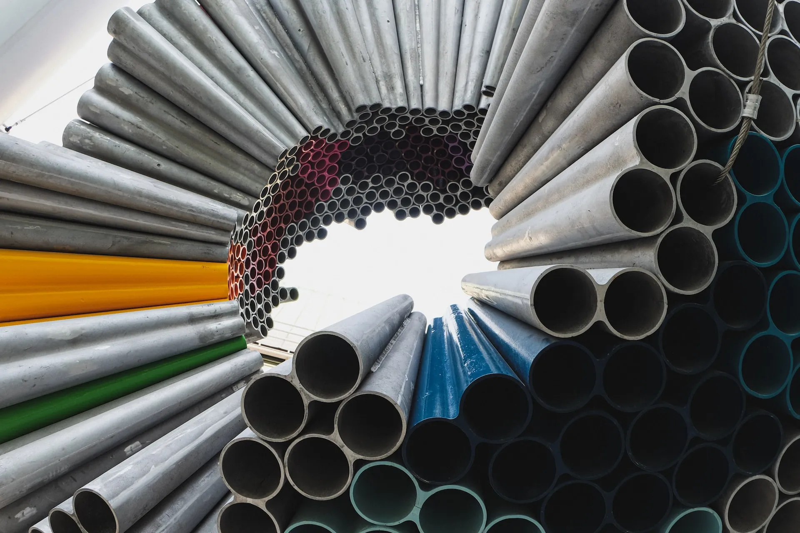
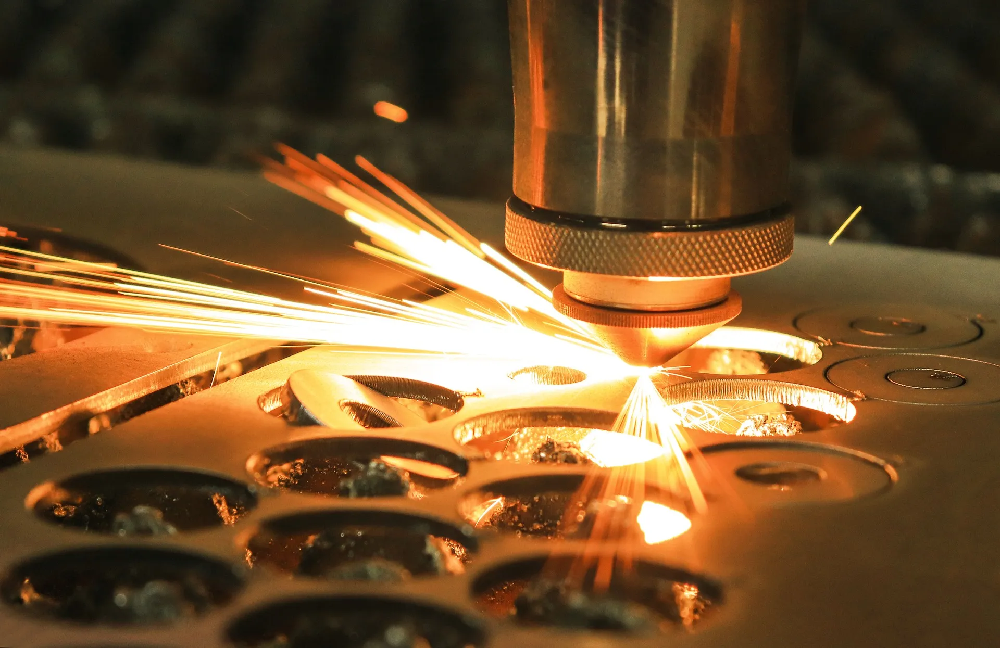
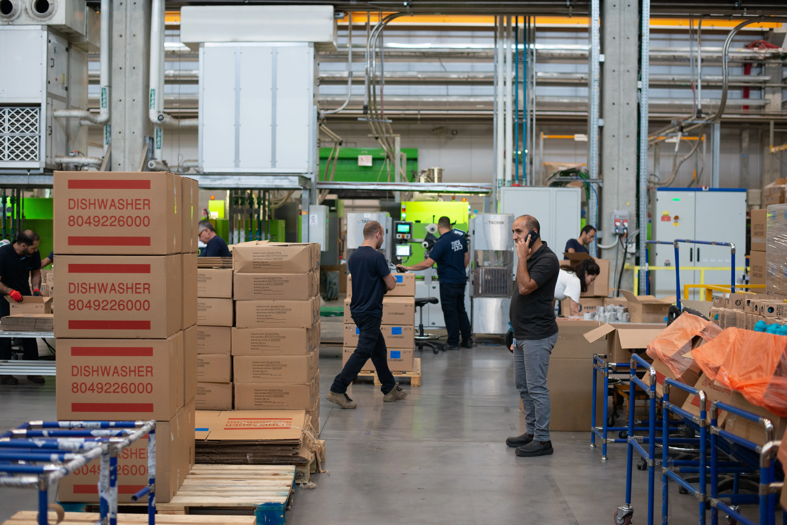
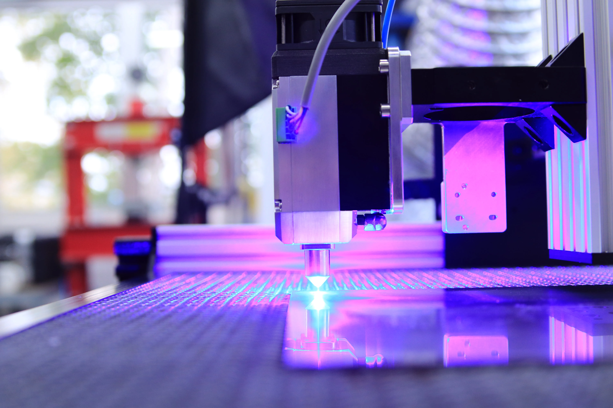

MANUFACTURE
Our dedication to producing high-quality, consistent and repeatable products drives our ability to scale manufacturing efficiently.
Our skilled team streamlines production to ensure that your products exceed expectations and are built for longevity. Our state-of-the-art factory specializes in laser-cutting, forming, welding, painting, and assembling stainless steel, steel, aluminum and copper sheet and tubing products. Our commitment to quality and precision has allowed us to extend our product range globally.
SHEET & TUBE
Our materials selection includes cold rolled, satin coat, and galvanized steel; stainless steel in 304 and 316 grades with 2B or #4 (brushed) finishes; aluminum and copper. We expedite material sourcing through our strong supply chain relationships.
CUSTOM LASER CUTTING
Our advanced fiber laser can cut and etch various sizes of sheet, pipe, channel & tubing. We can work with customer-supplied materials or make precise modifications to finished products, like adding holes to signs and enclosures.
RAPID PRODUCTION
Our multi-skilled team of machine operators, welders, painters and assemblers collaborate closely to support large-scale production to deliver consistent, high-quality products.
CUTTING-EDGE TECHNOLOGY
In the pursuit of operational excellence and market differentiation, our strategy adopts cutting-edge technologies to optimize performance. Utilizing best-in-class equipment and embracing technological advances are the foundational elements in sustaining our competitive market advantage.
